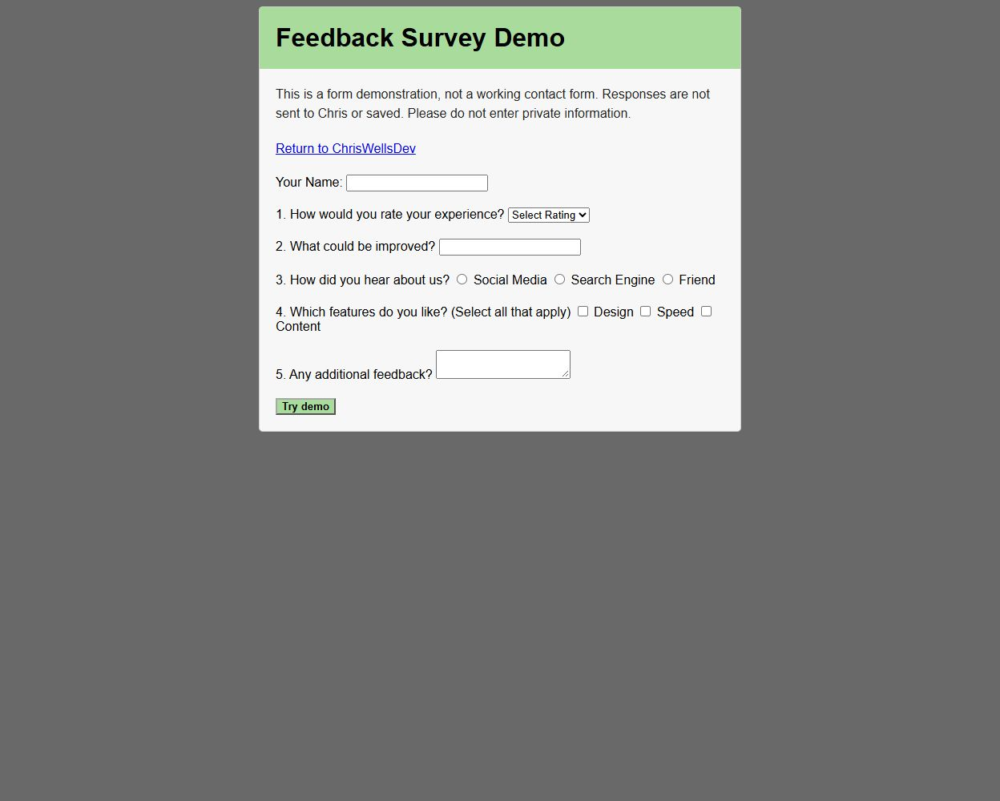
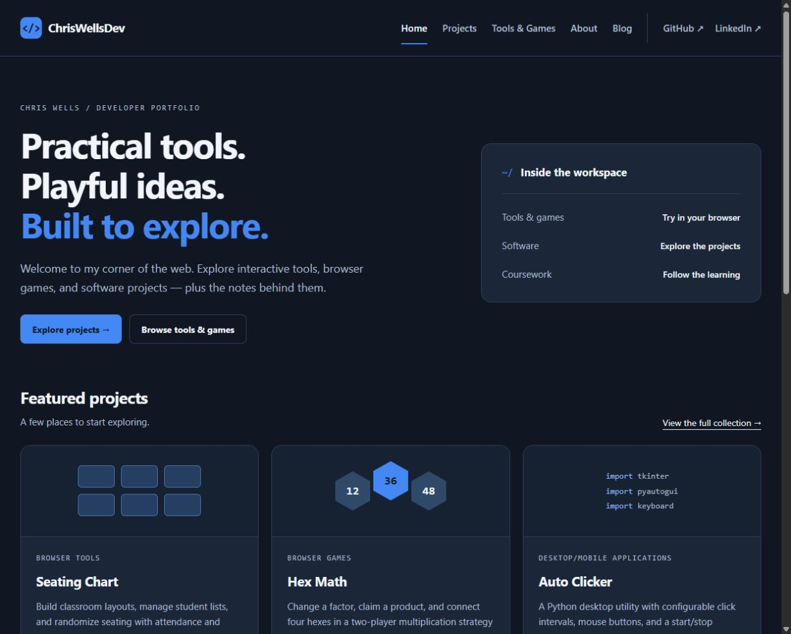

Browser Tools
Seating Chart
Plan classroom layouts and randomize seats with attendance, groups, and placement constraints.
Browser tool
The collection / All projects
A collection of browser tools, games, software applications, and coursework.
View Project for the story and details. Launch Tool or Play Game to go straight to the application.
Plan classroom layouts and randomize seats with attendance, groups, and placement constraints.
Browser tool

Try a client-side survey with required-answer validation and a personalized demo acknowledgment; nothing is sent or saved.
Form demo; no delivery

Change one multiplication factor, claim a product, and connect four hexes in a two-player game.
Two-player browser game

Select shuffled numbers from one to five in ascending order.
Browser game

A Python desktop utility with configurable click intervals, mouse buttons, and a start/stop hotkey.
Source available
A mobile vacation-planning application presented as a WGU capstone project.
APK available; not tested
Technology details not documented.
A mobile application represented here by its published privacy policy.
Privacy policy only
Technology details not documented.

Explore a five-page Tennessee website featuring Nashville, Knoxville, Chattanooga, and a contact-form example.
Coursework demo

An earlier portfolio About page preserved from an internet software course.
Archived coursework

A static developer portfolio bringing together interactive tools, games, software, and coursework.
Static website